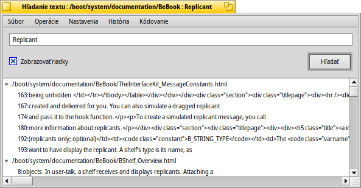

Slovenčina
Slovenčina Français
Français Deutsch
Deutsch Italiano
Italiano Русский
Русский Español
Español Svenska
Svenska 日本語
日本語 Українська
Українська 中文 ［中文］
中文 ［中文］ Português
Português Suomi
Suomi Magyar
Magyar Português (Brazil)
Português (Brazil) English
English Hľadanie textu
Hľadanie textu
| Panel: | Žiadna položka, bežne sa spúšťa prostredníctvom Doplnku Trackera | |
| Umiestnenie: | /boot/system/apps/TextSearch | |
| Nastavenia: | ~/config/settings/TextSearch |
Hľadanie textu vyhľadáva reťazec v textových súboroch. Typicky to je spustený z kontextového menu Doplnkov Trackera pre výber súborov alebo zložiek, ktoré chcete prehľadávať.
Zadajte hľadaný reťazec do textového poľa hore a stlačte RETURN alebo kliknite na . Ak je zaškrtnuté, zhody sú automaticky roztvorené, aby ukázali riadky súboru zahŕňajuceho hľadný reťazec.
Len pár slov o niektorých inak intuitívnych položiek ponuky:
Ponuka Súbor | ||||
| ALT N | Otvára nové okno, kde môžte zadať ďalší reťazec a prehľadávať tie isté priečinky/súbory. | |||
| ALT F | Umožňuje zvoliť novú sadu súborov a priečinkov prehľadávať ich. | |||
Ponuka Operácie | ||||
| ALT T | Odstráni všetky záznamy zo zoznamu, ktoré nie sú momentálne vybrané. | |||
| ALT O | Otvorí vybrané súbory s ich preferovanú aplikáciu (rovnaké ako dvojklik). Ak to v textový editor podporuje (napr. Pe), môžete skočiť na presný riadok, kde bol hľadaný reťazec nájdený. | |||
| ALT K | Otvára miesto, kde sa nachádzajú práve vybrané súbory. | |||
| ALT B | Skopíruje aktuálny výber do schránky. | |||
Ponuka Nastavenia | ||||
| To je užitočné pri práci v "unixovom" prostredí, kde sú administratívne súbory často skryté vnútri ".priečinkoch/". Systémy zdrojových verzií ako SVN a CVS sú príklady aplikácií používajúcich to a sú tiež široko používané v Haiku. | ||||
| Hľadanie textu používa nástroj príkazového riadku grep. Pre to, špeciálne znaky ako '"*\$?! a medzery musia odchádzať s \. Deaktivovanie tohto nastavenia znamená že to musíte robiť sami, ale maniesto toho vám garantuje silu regulárnych výrazov. | ||||
| Hľadanie textu je v súčasnej dobe jediný užitočný nástroj pre hľadanie reťazcov v textových súboroch. Deaktivácia tohto nastavenia prehľadá všetky typy súborov. | ||||
Ponuka História | ||||
| Obsahuje nedávno hľadané reťazce. | ||||
Ponuka Kódovanie | ||||
| Vyberte si iné kódovanie znakov ak je to potrebné. | ||||